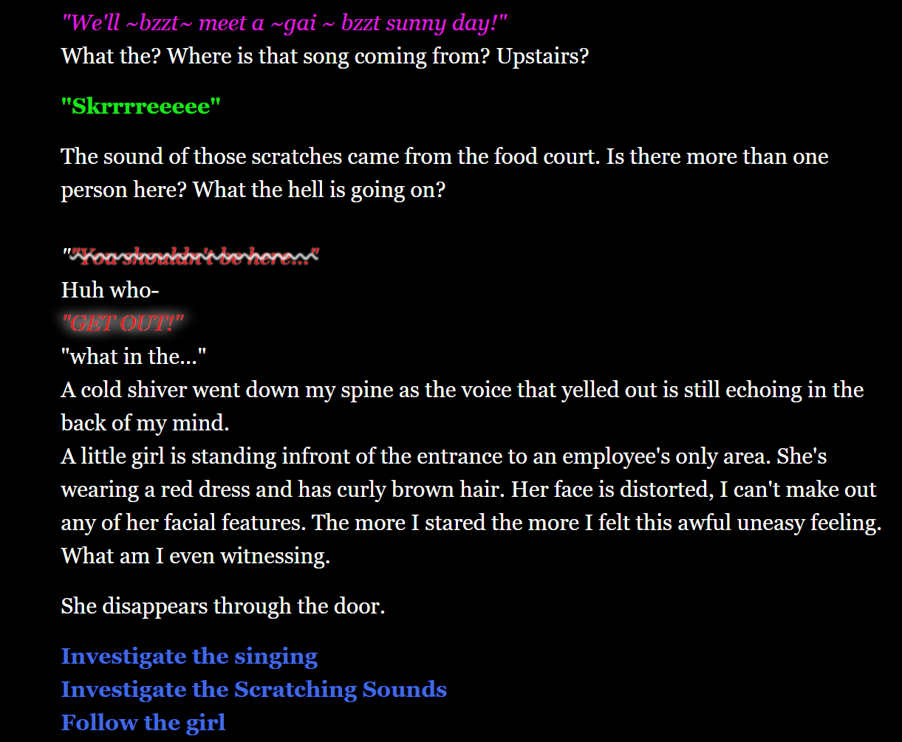

TTRPG Adventure
Description and Skills
This PDF is a quest for a TTRPG game. It is a basic run through on how a story would play out with a group of players plaing in a party. The PDF includes the background of the story and then 3 major locations and the main key events that would play out.
The PDF also contains some quotes on what characters would say and what certain events could happen depending on dice rolls. This was written for a project in my Game Design 2 class at ISU.
Interactive Story
{kind=link}

Description and Skills
- This is a interactive story of a woman named Olivia, who goes to a abandoned mall that her mom used to work at. A tragedy happened at this mall a long time ago and her mom was never found.
- The player steps inot Olivia's shoes and depending on player choice, different outcomes can occur.
- This interactive short story demonstrates my understanidng of chocie based narrative and having choices be meaningful by fully chanigng the path he player goes on.
- This story also shows my experience with twine as a tool and how I am able to change certain affects throughout the reading to provide more interactivity to the player.